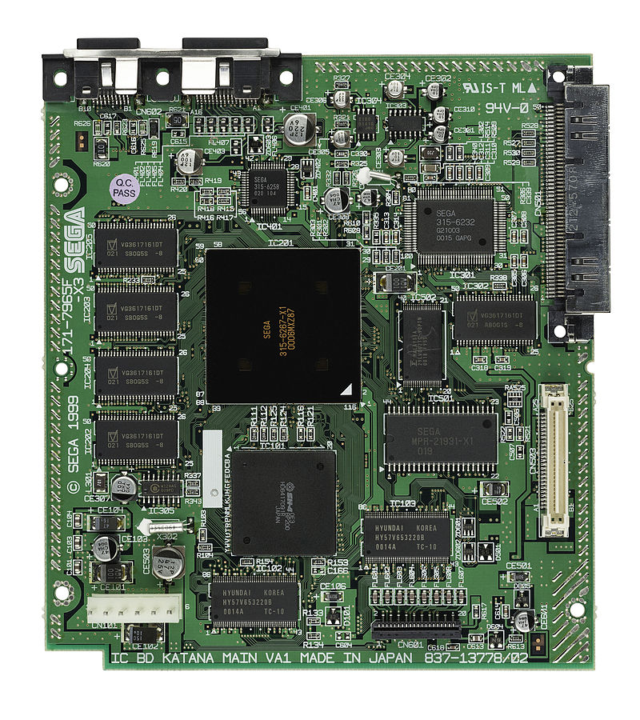

The Sega Dreamcast
Is a home video game console released by Sega on November 27, 1998 in Japan, September 9, 1999 in North America, and October 14, 1999 in Europe. It was the first in the sixth generation of video game consoles, preceding Sony's PlayStation 2, Nintendo's GameCube and Microsoft's Xbox. The Dreamcast was Sega's final home console, marking the end of the company's 18 years in the console market. In contrast to the expensive hardware of the unsuccessful Sega Saturn, the Dreamcast was designed to reduce costs with "off-the-shelf" components, including a Hitachi SH-4 CPU and an NEC PowerVR2 GPU.

Released in Japan to a subdued reception, the Dreamcast enjoyed a successful U.S. launch backed by a large marketing campaign, but interest in the system steadily declined as Sony built hype for the upcoming PlayStation 2. Sales did not meet Sega's expectations despite several price cuts, and the company continued to incur significant financial losses. After a change in leadership, Sega discontinued the Dreamcast on March 31, 2001, withdrawing from the console business and restructuring itself as a third-party publisher. 9.13 million Dreamcast units were sold worldwide.
Although the Dreamcast had a short lifespan and limited third-party support, reviewers have considered the console ahead of its time. Its library contains many games considered creative and innovative, including Crazy Taxi, Jet Set Radio and Shenmue, as well as high-quality ports from Sega's NAOMI arcade system board. The Dreamcast was also the first console to include a built-in modem for Internet support and online
I bought this console as soon as it came after I made enough money to buy it that is. I used to go to Best Buy or CompUsa(no longer around...) and play the demos they had on display and I was so amazed at the graphics, all I had at the time was Sega Genesis and Playstation 1. First game I saw on the system was Ready 2 Rumble Boxing, I'm not into sports but I just enjoyed the graphics. First game I bought for Dreamcast was House Of The Dead 2 and Tomb Raider Revelations.